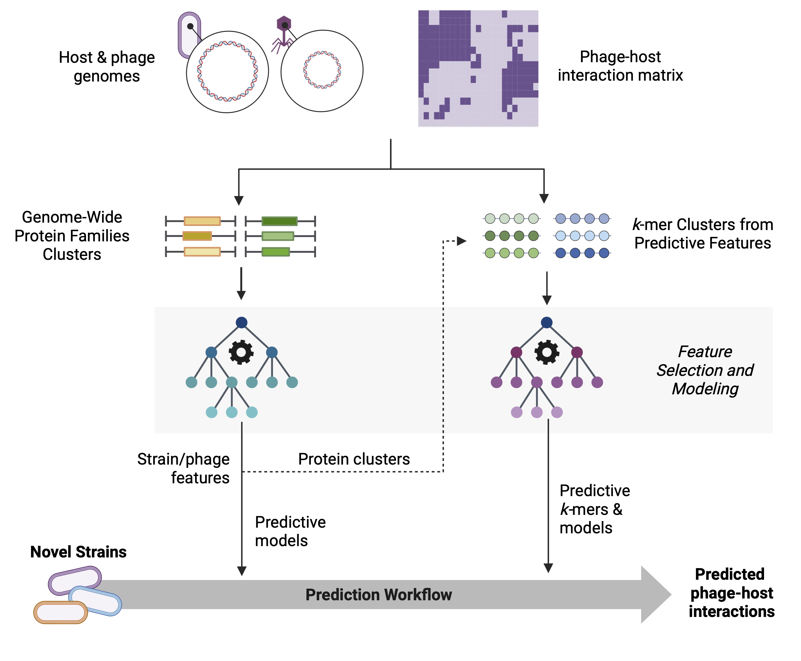

Genotype-to-Phenotype Phage-Host Interaction Prediction
GenoPHI is a Python package for machine learning-based prediction of genotype-phenotype relationships using whole-genome sequence data. Originally designed for phage-host interaction prediction, GenoPHI supports both binary interaction prediction and regression tasks for any microbial phenotype. The package implements protein family-based and k-mer-based approaches to extract genomic features from amino acid sequences and predict phenotypes using CatBoost gradient boosting models.


 Figure 1: GenoPHI workflow schematic showing the main analysis pipelines: Protein family-based workflow, K-mer-based workflow, and Predictive protein k-mer workflow. Each pathway includes feature extraction, selection, model training, and prediction steps.
External Dependency: GenoPHI requires MMseqs2 for protein sequence clustering and assignment.
Install via conda/mamba:
conda install -c bioconda mmseqs2
# or
mamba install -c bioconda mmseqs2
For other installation methods, see the MMSeqs2 Wiki.
Minimum Requirements: - Python 3.8 or higher - 8 GB RAM - 4 CPU cores - 10 GB free disk space
Recommended for Large Datasets: - Python 3.10+ - 32+ GB RAM - 8+ CPU cores - 50+ GB free disk space (depending on dataset size)
Tested Operating Systems: - Linux (Ubuntu 20.04+, CentOS 7+)
Create and activate a conda environment:
conda create -n genophi python=3.10
conda activate genophi
Clone and install from GitHub:
git clone https://github.com/Noonanav/GenoPHI.git
cd GenoPHI
pip install -e .
For development with optional dependencies:
pip install -e ".[dev]"
Test that GenoPHI is properly installed:
# Check GenoPHI version
genophi --version
# Verify MMseqs2 is accessible
mmseqs version
# Run basic help command
genophi --help
GenoPHI provides a unified command-line interface accessible through the genophi command:
# View available commands
genophi --help
# Get help for a specific command
genophi protein-family-workflow --help
For most phage-host interaction prediction tasks, use these recommended settings:
genophi protein-family-workflow \
--input_strain strain_fastas/ \
--input_phage phage_fastas/ \
--phenotype_matrix interactions.csv \
--output results/ \
--threads 8 \
--num_features 100 \
--num_runs_fs 25 \
--num_runs_modeling 50 \
--method rfe \
--use_clustering \
--cluster_method hierarchical \
--n_clusters 20 \
--filter_type strain
Key Parameters Explained:
- --num_features 100: Select top 100 features (adjust based on dataset size)
- --num_runs_fs 25: 25 iterations for robust feature selection
- --num_runs_modeling 50: 50 modeling runs for reliable performance estimates
- --method rfe: Recursive Feature Elimination (balanced performance)
- --use_clustering: Enable hierarchical clustering of features
- --filter_type strain: Split data by strain to test generalization
For single-strain phenotypes (no phage data):
genophi protein-family-workflow \
--input_strain strain_fastas/ \
--phenotype_matrix phenotypes.csv \
--output results/ \
--threads 8 \
--sample_column strain \
--phenotype_column resistance \
--filter_type none
GenoPHI provides the following main commands:
| Command | Description |
|---|---|
protein-family-workflow |
Recommended basic workflow: Complete protein family-based workflow |
full-workflow |
Protein families → k-mers from predictive proteins |
kmer-workflow |
Complete k-mer-based workflow from all proteins |
cluster |
Generate protein family clusters and feature tables |
select-features |
Perform feature selection on any feature table |
train |
Train predictive models on selected features |
predict |
Predict phenotypes using trained models |
select-and-train |
Feature selection + modeling from any feature table |
assign-features |
Assign features to new genomes |
assign-predict |
Assign features and predict (protein families) |
annotate |
Annotate predictive features with functional info |
kmer-assign-features |
Assign k-mer features to new genomes |
kmer-assign-predict |
Assign k-mer features and predict |
The primary workflow for most applications. Performs complete protein family clustering, feature selection, and modeling.
genophi protein-family-workflow \
--input_strain strain_fastas/ \
--input_phage phage_fastas/ \
--phenotype_matrix interactions.csv \
--output results/ \
--threads 8 \
--num_features 100 \
--num_runs_fs 25 \
--num_runs_modeling 50 \
--method rfe \
--filter_type strain
Output Structure:
results/
├── clustering/ # MMseqs2 databases and clusters
├── feature_tables/ # Generated feature tables
├── feature_selection/ # Selected features and occurrence counts
├── modeling_results/ # Models and performance metrics
│ ├── cutoff_5/, cutoff_10/, ...
│ ├── model_performance/ # Summary plots
│ └── models/ # Trained models for prediction
└── workflow_report.txt # Performance and timing summary
For strain-level phenotypes (no phage data required):
genophi protein-family-workflow \
--input_strain strain_fastas/ \
--phenotype_matrix strain_phenotypes.csv \
--output results/ \
--threads 8 \
--sample_column strain \
--phenotype_column antibiotic_resistance \
--task_type classification \
--filter_type none
Phenotype Matrix Format:
strain,antibiotic_resistance
Strain_001,1
Strain_002,0
Strain_003,1
For regression:
--task_type regression \
--phenotype_column growth_rate
This workflow first identifies predictive protein families, then extracts k-mers specifically from those families for refined modeling. This combines the interpretability of protein families with the resolution of k-mer analysis.
genophi full-workflow \
--input_strain strain_fastas/ \
--input_phage phage_fastas/ \
--phenotype_matrix interactions.csv \
--output results/ \
--k 5 \
--threads 8
Workflow Steps: 1. Cluster proteins into families 2. Perform feature selection on protein families 3. Extract k-mers from predictive protein families only 4. Train models on k-mer features 5. Generate annotations for predictive k-mers
Generate k-mer features from all proteins without prior protein family analysis:
genophi kmer-workflow \
--input_strain strain_fastas/ \
--input_phage phage_fastas/ \
--phenotype_matrix interactions.csv \
--output kmer_results/ \
--k 4 \
--threads 8 \
--num_features 100 \
--num_runs_fs 25 \
--num_runs_modeling 50
K-mer Specific Parameters:
- --k 4: K-mer length (default: 4)
- --k_range: Generate k-mers from length 3 to k
- --one_gene: Include features with only one gene (default: False)
Advanced Options:
--use_dynamic_weights \ # Apply dynamic weighting
--weights_method inverse_frequency \ # Weighting method
--use_feature_clustering \ # Pre-filter by cluster presence
--feature_n_clusters 20 # Number of feature clusters
genophi cluster \
--input_strain strain_fastas/ \
--input_phage phage_fastas/ \
--phenotype_matrix interactions.csv \
--output clustering_results/ \
--min_seq_id 0.4 \
--coverage 0.8 \
--sensitivity 7.5 \
--threads 8
Clustering Parameters:
- --min_seq_id 0.4: Minimum sequence identity (range: 0-1)
- --coverage 0.8: Minimum coverage (range: 0-1)
- --sensitivity 7.5: MMseqs2 sensitivity (higher = more sensitive, slower)
Feature selection works on any feature table with a phenotype column:
genophi select-features \
--input feature_table.csv \
--output feature_selection/ \
--method rfe \
--num_features 100 \
--num_runs 25 \
--filter_type strain \
--phenotype_column interaction \
--threads 8
Feature Selection Methods:
- rfe: Recursive Feature Elimination (recommended)
- shap_rfe: RFE using SHAP values
- select_k_best: ANOVA F-test (fast)
- chi_squared: Chi-squared test
- lasso: L1 regularization
- shap: Direct SHAP importance
Advanced Selection Options:
--use_dynamic_weights \ # Handle imbalanced features
--weights_method inverse_frequency \ # Weighting strategy
--use_clustering \ # Group correlated features
--cluster_method hierarchical \ # Clustering algorithm
--n_clusters 20 # Number of clusters
Train models from selected features or any feature table:
genophi train \
--input_dir feature_selection/filtered_feature_tables \
--output models/ \
--num_runs 50 \
--phenotype_column interaction \
--threads 8
For regression tasks:
--task_type regression \
--phenotype_column efficiency
Run feature selection and modeling together from any feature table:
genophi select-and-train \
--input custom_feature_table.csv \
--output results/ \
--method rfe \
--num_features 100 \
--num_runs_fs 25 \
--num_runs_modeling 50 \
--phenotype_column your_phenotype \
--sample_column your_sample_id \
--threads 8
This command is flexible and works with:
- Protein family features
- K-mer features
- Custom features
- Any feature table with any phenotype / output column
genophi assign-predict \
--input_dir new_strains/ \
--mmseqs_db results/tmp/strain/mmseqs_db \
--clusters_tsv results/strain/clusters.tsv \
--feature_map results/strain/features/selected_features.csv \
--model_dir results/modeling_results/cutoff_* \
--phage_feature_table results/phage/features/feature_table.csv \
--output predictions/ \
--genome_type strain
For new phages:
--input_dir new_phages/ \
--mmseqs_db results/tmp/phage/mmseqs_db \
--clusters_tsv results/phage/features/selected_features.csv \
--strain_feature_table results/strain/features/feature_table.csv \
--genome_type phage
genophi kmer-assign-predict \
--input_dir new_strains/ \
--mmseqs_db results/tmp/strain/mmseqs_db \
--clusters_tsv results/strain/clusters.tsv \
--feature_map results/strain/features/selected_features.csv \
--filtered_kmers kmer_results/kmer_tables/filtered_kmers.csv \
--aa_sequence_file kmer_results/kmer_tables/aa_sequences.faa \
--model_dir kmer_results/modeling/modeling_results/cutoff_* \
--output predictions/ \
--genome_type strain
Identifies proteins associated predictive protein families or k-mers and merges with functional information:
genophi annotate \
--selected_features feature_selection/filtered_feature_tables/select_feature_table_cutoff_3.csv \
--feature_map strain/features/feature_map.csv \
--clusters_tsv clustering_results/clustering/selected_features.csv \
--annotation_table annotations.csv \
--aa_sequence_file all_sequences.faa \
--output annotations/ \
--feature_type strain
Protein sequences in FASTA format (.faa files):
>protein_id_1
MKTAYIAKQRQISFVKSHFSRQLEERLGLIEVQAPILSRVGDGTQDNLSGAEKAVQVKVKALPDAQFEVVHSLAKWKRQ...
>protein_id_2
MRISTTITTTITITTGNGAG...
Important: Protein IDs must be unique across all genomes. If duplicates exist, GenoPHI will automatically prefix them with genome names.
Binary classification (infection/no infection):
strain,phage,interaction
Strain_001,Phage_A,1
Strain_001,Phage_B,0
Strain_002,Phage_A,1
Regression (infection efficiency):
strain,phage,efficiency
Strain_001,Phage_A,0.85
Strain_001,Phage_B,0.12
Strain_002,Phage_A,0.93
Classification:
strain,antibiotic_resistance
Strain_001,1
Strain_002,0
Strain_003,1
Regression:
strain,growth_rate
Strain_001,0.42
Strain_002,0.38
Strain_003,0.51
Column Names: Use --strain_column, --phage_column, --sample_column, and --phenotype_column to specify your column names.
| Method | Description | Best For | Speed |
|---|---|---|---|
| RFE (recommended) | Recursive Feature Elimination | General use, balanced performance | Medium |
| SHAP-RFE | RFE using SHAP values | Model-agnostic importance | Slow (High RAM) |
| SelectKBest | ANOVA F-test | Fast screening, linear relationships | Fast |
| Chi-squared | χ² test for independence | Categorical features | Fast |
| Lasso | L1 regularized regression | Sparse models, multicollinearity | Fast |
| SHAP | Shapley Additive Explanations | Direct feature importance | Slow (High RAM) |
Handle imbalanced feature distributions:
--use_dynamic_weights \
--weights_method inverse_frequency # or log10, balanced
When to use: - Features with highly variable occurrence frequencies - Some features present in most genomes, others very rare - Imbalanced positive/negative examples
Group correlated features for more robust selection:
--use_clustering \
--cluster_method hierarchical \ # or hdbscan
--n_clusters 20
HDBSCAN Options:
--cluster_method hdbscan \
--min_cluster_size 5 \
--min_samples 5 \
--cluster_selection_epsilon 0.0
AUC-ROC (Area Under ROC Curve): Overall discriminative ability $$\text{AUC} = \int_{0}^{1} \text{TPR}(\text{FPR}) \, d\text{FPR}$$
MCC (Matthews Correlation Coefficient): Balanced metric for all confusion matrix elements $$\text{MCC} = \frac{TP \times TN - FP \times FN}{\sqrt{(TP + FP)(TP + FN)(TN + FP)(TN + FN)}}$$
Precision: Proportion of true positives among predicted positives $$\text{Precision} = \frac{TP}{TP + FP}$$
Recall (Sensitivity): Proportion of true positives among actual positives
$$\text{Recall} = \frac{TP}{TP + FN}$$
F1 Score: Harmonic mean of precision and recall $$F1 = 2 \times \frac{\text{Precision} \times \text{Recall}}{\text{Precision} + \text{Recall}}$$
Accuracy: Overall correct predictions $$\text{Accuracy} = \frac{TP + TN}{TP + TN + FP + FN}$$
GenoPHI generates comprehensive visualizations:
Per-Run Plots (modeling_results/cutoff_*/run_*/):
- Confusion matrices (classification)
- ROC curves with AUC scores
- Precision-Recall curves
- SHAP feature importance bar plots
- SHAP value scatter plots (beeswarm)
Summary Plots (modeling_results/model_performance/):
- SHAP beeswarm plots across all runs
- ROC curve comparisons across feature selection cutoffs
- Precision-Recall curve comparisons
- Hit rate and hit ratio curves
Example visualizations from the original README:
 SHAP feature importance summary
SHAP feature importance summary

ROC curves comparing different feature selection cutoffs
 Precision-Recall curves
Precision-Recall curves
 Hit rate analysis
Hit rate analysis
 Hit ratio analysis
Hit ratio analysis
output_dir/
├── clustering/
│ ├── strain_db/ # MMseqs2 database
│ ├── strain_clusters.tsv # Cluster assignments
│ ├── phage_db/ # Phage database (optional)
│ └── phage_clusters.tsv
├── feature_tables/
│ ├── strain_feature_table.csv
│ ├── phage_feature_table.csv # If phages provided
│ ├── merged_feature_table.csv
│ └── feature_map.csv
├── feature_selection/
│ ├── selected_features/
│ │ ├── run_1_selected_features.csv
│ │ └── ...
│ ├── feature_occurrence_counts.csv
│ └── filtered_feature_tables/
│ ├── cutoff_5_feature_table.csv
│ ├── cutoff_10_feature_table.csv
│ └── ...
├── modeling_results/
│ ├── cutoff_5/
│ │ ├── run_1/, run_2/, ...
│ │ └── cutoff_5_combined_performance.csv
│ ├── cutoff_10/
│ ├── model_performance/
│ │ ├── shap_summary_plots/
│ │ ├── roc_curve.png
│ │ ├── pr_curve.png
│ │ └── performance_comparison.csv
│ └── models/
│ ├── run_1/best_model.pkl
│ └── ...
├── predictions/
│ ├── predicted_interactions.csv
│ └── prediction_confidence.csv
└── workflow_report.txt
output_dir/
├── clustering/ # Protein family clustering
├── kmer_tables/
│ ├── kmer_feature_table.csv
│ ├── feature_map.csv
│ ├── filtered_kmers.csv
│ ├── feature2cluster.csv
│ └── aa_sequences.faa
├── feature_selection/
├── modeling_results/
└── kmer_workflow_report.txt
GenoPHI can also be used programmatically:
from genophi.workflows import (
run_protein_family_workflow,
run_kmer_workflow,
run_modeling_workflow_from_feature_table,
assign_predict_workflow
)
# Recommended: Protein family workflow
run_protein_family_workflow(
input_path_strain="strain_fastas/",
input_path_phage="phage_fastas/",
phenotype_matrix="interactions.csv",
output_dir="results/",
threads=8,
num_features=100,
num_runs_fs=50,
num_runs_modeling=100,
method='rfe',
filter_type='strain'
)
# _K_-mer workflow
run_kmer_workflow(
input_strain_dir="strain_fastas/",
input_phage_dir="phage_fastas/",
phenotype_matrix="interactions.csv",
output_dir="kmer_results/",
k=5,
threads=8,
num_features=100
)
# Feature selection and modeling from any feature table
run_modeling_workflow_from_feature_table(
full_feature_table="custom_features.csv",
output_dir="modeling_results/",
phenotype_column="your_phenotype",
sample_column="your_sample_id",
num_features=100,
num_runs_fs=50,
num_runs_modeling=100,
method='rfe'
)
# Prediction workflow
assign_predict_workflow(
input_dir="new_genomes/",
mmseqs_db="results/tmp/strain/mmseqs_db",
clusters_tsv="results/strain/clusters.tsv",
feature_map="results/strain/features/selected_features.csv",
model_dir="results/modeling_results/cutoff_*",
output_dir="predictions/",
genome_type='strain',
phage_feature_table_path="results/phage/features/feature_table.csv"
)
Control how data is split for model evaluation:
--filter_type none # Random split
--filter_type strain # Leave-strain-out (test on new strains)
--filter_type phage # Leave-phage-out (test on new phages)
Recommendation: Use --filter_type strain for phage-host predictions to evaluate generalization to new strains.
Models use grid search for hyperparameter optimization. Default parameters are optimized for phage-host interaction prediction but can be customized in the code.
For large datasets, adjust memory and threading:
--max_ram 64 \ # Maximum RAM in GB
--threads 16 \ # Number of CPU threads
--clear_tmp # Remove temporary files after completion
For continuous phenotypes:
--task_type regression \
--phenotype_column efficiency
GenoPHI will use appropriate regression metrics (RMSE, MAE, R²) instead of classification metrics.
Filter features by cluster presence before modeling:
--use_feature_clustering \
--feature_cluster_method hierarchical \
--feature_n_clusters 20 \
--feature_min_cluster_presence 2
This removes features that appear in fewer than feature_min_cluster_presence genome clusters.
To help you get started, we recommend testing GenoPHI with:
Minimal test case with 10 strains, 5 phages:
test_data/
├── strains/
│ ├── Strain_001.faa
│ ├── Strain_002.faa
│ └── ...
├── phages/
│ ├── Phage_A.faa
│ ├── Phage_B.faa
│ └── ...
└── interactions.csv
Issue: MMseqs2 not found
Solution: Ensure MMseqs2 is installed and in your PATH
conda install -c bioconda mmseqs2
which mmseqs # Should show the path
Issue: Out of memory errors
Solution:
- Reduce --max_ram parameter
- Process fewer genomes at once
- Use --clear_tmp to remove intermediate files
- Increase system swap space
Issue: Duplicate protein IDs
Solution: GenoPHI automatically detects and prefixes duplicates with genome names
If you want to prevent this, ensure protein IDs are unique across all input files
Issue: No predictive features found
Solution:
- Try different feature selection methods (--method)
- Adjust num_features parameter
- Check that phenotype matrix has sufficient positive/negative examples
- Verify that interaction matrix matches genome filenames
Issue: Poor model performance
Solution:
- Increase num_runs_fs and num_runs_modeling for more robust results
- Try different feature selection methods
- Use --use_dynamic_weights for imbalanced features
- Enable --use_clustering for feature grouping
- Check data quality and ensure phenotype matrix is correct
- Try different clustering parameters (min_seq_id, coverage)
Issue: Models take too long to train
Solution:
- Reduce num_runs_modeling
- Reduce num_features
- Increase --threads parameter
- Use faster feature selection methods (select_k_best, chi_squared)
Q: Can GenoPHI be used for organisms other than phages and bacteria?
A: Yes! While designed for phage-host interactions, GenoPHI works with any protein sequences and phenotypes. It's been applied to bacteria, archaea, and eukaryotic microbes.
Q: How many genomes do I need for reliable predictions?
A: Minimum: ~20 strains and 20 phages with ~400 interactions. Recommended: 50+ strains, 50+ phages, 5000+ interactions for robust models.
Q: What file formats are required?
A: FASTA files (.faa) for protein sequences and CSV for phenotype matrices. See Input Data Formats for details.
Q: What's the difference between protein family and k-mer approaches?
A: Protein families group similar full-length proteins (interpretable, captures protein-level patterns). K-mers analyze short amino acid sequences (high resolution, captures local patterns). The full-workflow combines both by extracting k-mers from predictive protein families.
Q: Should I use single-strain or phage-host mode?
A: Use phage-host mode for interaction prediction. Use single-strain mode for strain-level phenotypes (resistance, growth rate, etc.) where phage data isn't relevant.
Q: Which feature selection method should I use?
A: Start with RFE (balanced performance). Try SHAP for interpretability or SelectKBest for speed. Compare multiple methods for best results.
Q: How do I interpret SHAP plots?
A: SHAP beeswarm plots show feature importance. Features at the top are most important. Red dots = high feature values, blue = low. Position right of center = positive impact on prediction.
Q: Can I use custom features instead of protein families?
A: Yes! Use select-and-train with any feature table containing a phenotype column (metabolic pathways, gene presence/absence, etc.).
Q: How do I handle imbalanced datasets?
A: Use --use_dynamic_weights with --weights_method inverse_frequency to balance feature importance. CatBoost also has built-in class balancing.
Q: Models perform poorly - what should I try?
A: (1) Increase num_runs for more robust estimates, (2) Try different clustering parameters, (3) Enable dynamic weighting, (4) Check data quality and phenotype matrix accuracy.
Q: How much RAM do I need?
A: Minimum 8 GB. Recommend 16+ GB for 50+ genomes, 32+ GB for 100+ genomes. Use --max_ram to limit memory usage.
--filter_type strain for phage-host predictions to evaluate generalizationnum_runs_fs = 25, num_runs_modeling = 50) for robust results--use_clustering) for correlated featuresThe datasets used in the GenoPHI publication are included in the data/ directory for reproducibility and benchmarking purposes.
data/
├── experimental_validation/
│ ├── BASEL_ECOR_interaction_matrix.csv # BASEL collection against ECOR strains for model validation
│ └── ECOR27_TnSeq_high_fitness_genes.csv # Filtered RB-TnSeq results
└── interaction_matrices/
├── ecoli_interaction_matrix.csv # E. coli phage-host interactions
├── ecoli_interaction_matrix_subset.csv # Smaller E. coli subset for testing
├── klebsiella1_interaction_matrix.csv # Klebsiella dataset 1
├── klebsiella2_interaction_matrix.csv # Klebsiella dataset 2
├── pseudomonas_interaction_matrix.csv # Pseudomonas interactions
└── vibrio_interaction_matrix.csv # Vibrionaceae interactions
If you use GenoPHI in your research, please cite:
@article{noonan2025genophi,
author = {Noonan, Avery J. C. and Moriniere, Lucas and Rivera-López, Edwin O. and Patel, Krish and Pena, Melina and Svab, Madeline and Kazakov, Alexey and Deutschbauer, Adam and Dudley, Edward G. and Mutalik, Vivek K. and Arkin, Adam P.},
title = {Phylogeny-agnostic strain-level prediction of phage-host interactions from genomes},
year = {2025},
doi = {10.1101/2025.11.15.688630},
publisher = {Cold Spring Harbor Laboratory},
url = {https://www.biorxiv.org/content/10.1101/2025.11.15.688630v1},
journal = {bioRxiv}
}
Preprint: Noonan, A.J.C., Moriniere, L., Rivera-López, E.O., Patel, K., Pena, M., Svab, M., Kazakov, A., Deutschbauer, A., Dudley, E.G., Mutalik, V.K., & Arkin, A.P. (2025). Phylogeny-agnostic strain-level prediction of phage-host interactions from genomes. bioRxiv. https://doi.org/10.1101/2025.11.15.688630
We welcome contributions to GenoPHI! Here's how you can help:
We are committed to providing a welcoming and inclusive environment. Please be respectful and constructive in all interactions.
This software is available under the MIT License. See the LICENSE file for details.
This software is subject to Lawrence Berkeley National Laboratory copyright. The U.S. Government retains certain rights as this software was developed under funding from the U.S. Department of Energy.
For questions, issues, or feature requests: - Open an issue on GitHub - Contact: Avery Noonan (averynoonan@gmail.com)
This was completed as part of the BRaVE Phage Foundry at Lawrence Berkeley National Laboratory which is supported by the U.S. Department of Energy, Office of Science, Office of Biological & Environmental Research under contract number DE-AC02-05CH11231. This work was also supported by the National Science Foundation (NSF) of the United States under grant award No. 2220735 (EDGE CMT: Predicting bacteriophage susceptibility from Escherichia coli genotype).